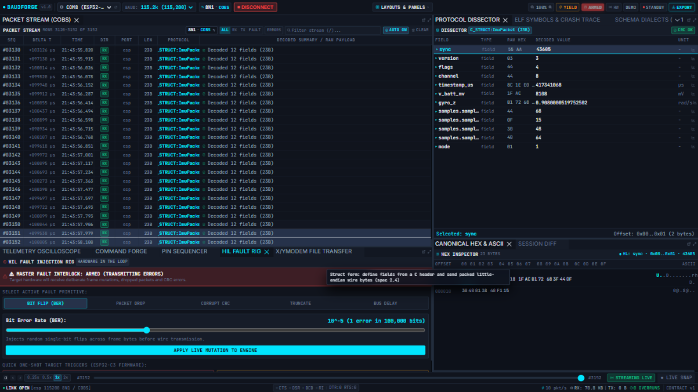

HIL Fault Injection Rig
The Fault Rig corrupts what your device receives — the hardware-in-the-loop way to answer "what does my firmware do when the wire turns hostile?". Bit flips, dropped frames, CRC corruption, truncation and bus delays, all reproducible.

The master interlock
The red MASTER FAULT INTERLOCK: ARMED (TRANSMITTING ERRORS) banner appears whenever a profile is live, and the ribbon's FAULT badge lights up. Everything you transmit while armed is corrupted according to the profile — flip it off the moment you are done; the arm state is session-local (it clears when the engine stops).
Profiles
| Profile | What it does |
|---|---|
| BIT FLIP (BER) | Random single-bit flips across transmitted bytes at the chosen bit error rate — the radiation-test classic. The slider reads 10^-n (errors per bit). |
| PACKET DROP | Drops every Nth transmission (drop_every). |
| CORRUPT CRC | Damages bytes so the device's own checksum check fires. |
| TRUNCATE | Cuts frames short mid-transmission. |
| BUS DELAY | Holds bytes back by delay_ms (± jitter_ms) — tests your device's timeouts. |
Set the parameters, then APPLY LIVE MUTATION TO ENGINE — the profile is live immediately; no restart.
What exactly is corrupted
Fault injection applies to the transmit path: the bytes you send through Command Forge, a pin sequence, or a bridge forward are corrupted before they reach the device. The engine reports what actually left: a send reply carries fault_bytes (how many bytes the profile altered) alongside sent. Your device's reaction — CRC-fail handling, retry logic, watchdog resets — is the experiment.
Receive-side corruption (damaging what the workstation sees) is deliberately not a feature; the engine's job on receive is to tell you the truth about the wire.
One-shot firmware triggers
Three buttons send ASCII commands to firmware that understands the test protocol (fault bad_crc 3, fault drop 2) — for firmware that implements its own self-test triggers. They fail honestly with the engine's reason if the port cannot take them.
Verifying it works
- Arm
BIT FLIPat a high rate. - Send a frame from Command Forge.
- The send reply's
fault_bytesshows the corruption (at BER 1.0, every byte is altered). - Watch the device's response — and the Activity Log records every arm/clear.